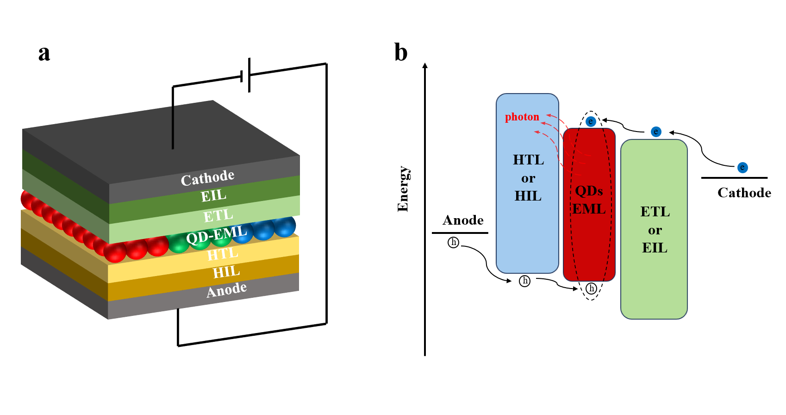
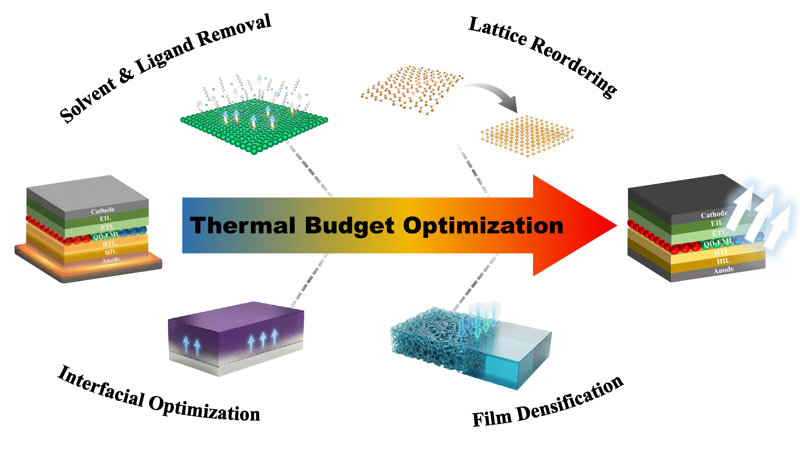
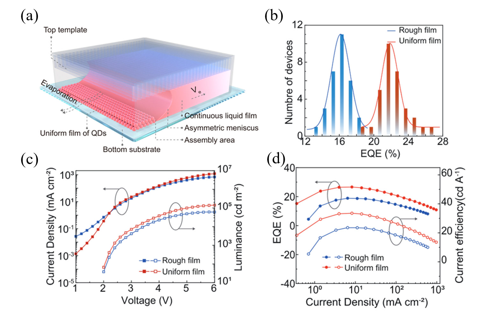

Publications
First-author review · 2026
Research Progress on Annealing Strategies for High-Performance Quantum Dot Light-Emitting Diodes
Advanced Optical Materials 14(32), e71559 (2026)
Why the layer matters
I compared annealing studies by device layer and material system. Heating can remove solvent and improve charge transport in a deposited film. It can also disturb the ligands or interfaces that keep quantum dots emissive. The review traces that trade-off across the device stack.


Two heat treatments in one InP QLED process
Nanocrystal synthesis
320–340 °C
Grow ZnSe/ZnS shells on InP quantum dots.
After film deposition
120 °C for 30 min
Bake the quantum-dot emissive layer.
Film formation and device performance
In one InP study, evaporation-driven assembly yielded more uniform quantum-dot films. Peak external quantum efficiency (EQE) shifted toward higher values across devices made with those films.
